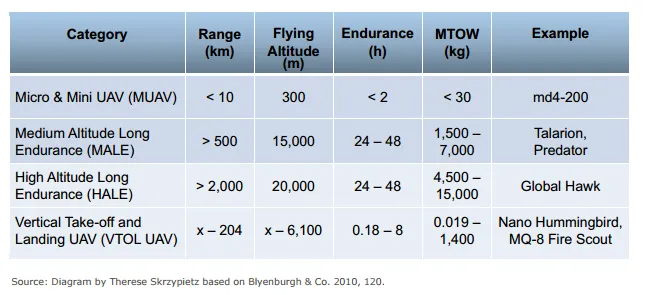
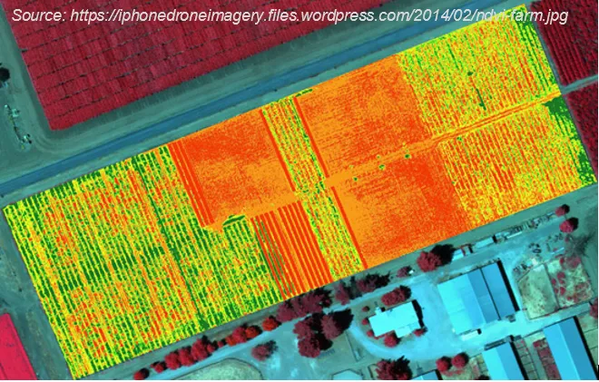
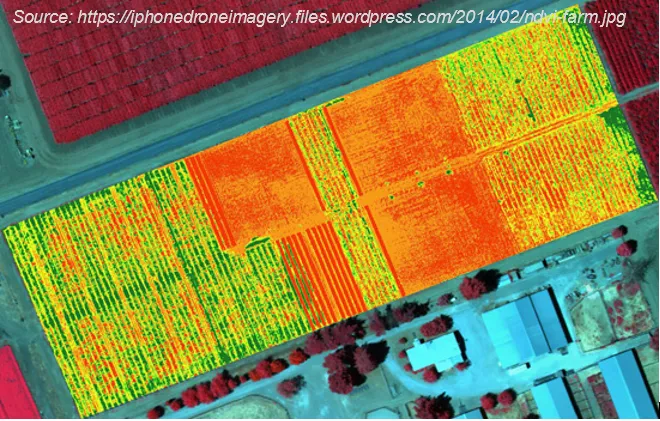

Introduction to UAS
Center for Geospatial Analytics at North Carolina State University
UAS: Unmanned Aircraft System
- Unmanned = without a person onboard (operated by automatic or remote control)
- Aircraft = able to fly
- System = associated elements related to safe operations (may include control stations, control links, support equipment, payloads, flight termination systems, and launch recovery equipment)

Consists of three elements:
- Unmanned Aircraft
- Control Station
- Data Link
UAS or UAV? Or maybe a drone?
Unmanned Aerial Vehicle (UAV)
- Excludes: missiles, weapons, or exploding warheads,
- Includes: all classes of airplanes, helicopters, airships, and powered-lift aircraft,
- Doesn’t include: traditional balloons, rockets, tethered aircraft, and un-powered gliders.

Simplified classifications


- More (much much more) about classifications in the article
- Condensed basics including classification can be found in Unmanned Aircraft Systems for Civilian Missions
Generic Unmanned Aircraft System
- Air vehicle
- Mission planning element
- Command and control element
- Communication link
- Launch and recovery element (for some of them)
- Payload

Sensors

Multispectral and hyperspectral cameras
- Miniaturization is challenging in terms of optics and sensor calibration
- Weight, cost, data quality has improved; spectral bands, resolution need improvements
- Cameras with NIR band: agriculture and vegetation mapping (for NDVI)
- The more bands the more information, but also higher price of the sensor
- $$ multispectral - couple thousands
- $$$ hyperspectral - tens of thousands
 

Application Examples (2)
- News Broadcasting:
- In providing aerial video feeds for news events;
- Air Traffic Control and Ground Traffic Control:
- To monitor traffic and accidents over highways and streets, capture violation of traffic rules;

UAS for Remote Sensing (1)
- Agriculture and Environment:
- Crop monitoring, vegetation mapping, forest fire monitoring, animals detection;
- Intelligence, Surveillance, and Reconnaissance:
- Detection of lost persons in difficult-to-access situations, support fire brigades in real-time crisis management, rapid disaster management;

UAS for Remote Sensing (3)
- General surveying, mapping, and photogrammetry, cadastral applications:
- Cadastral surveying, alternative to traditional surveying, high-precision parcel boundary determination;